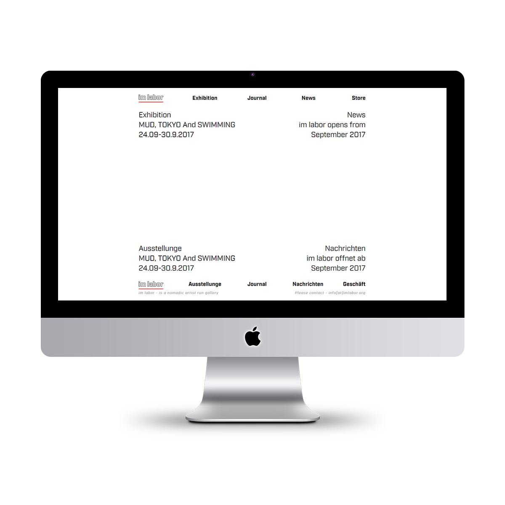
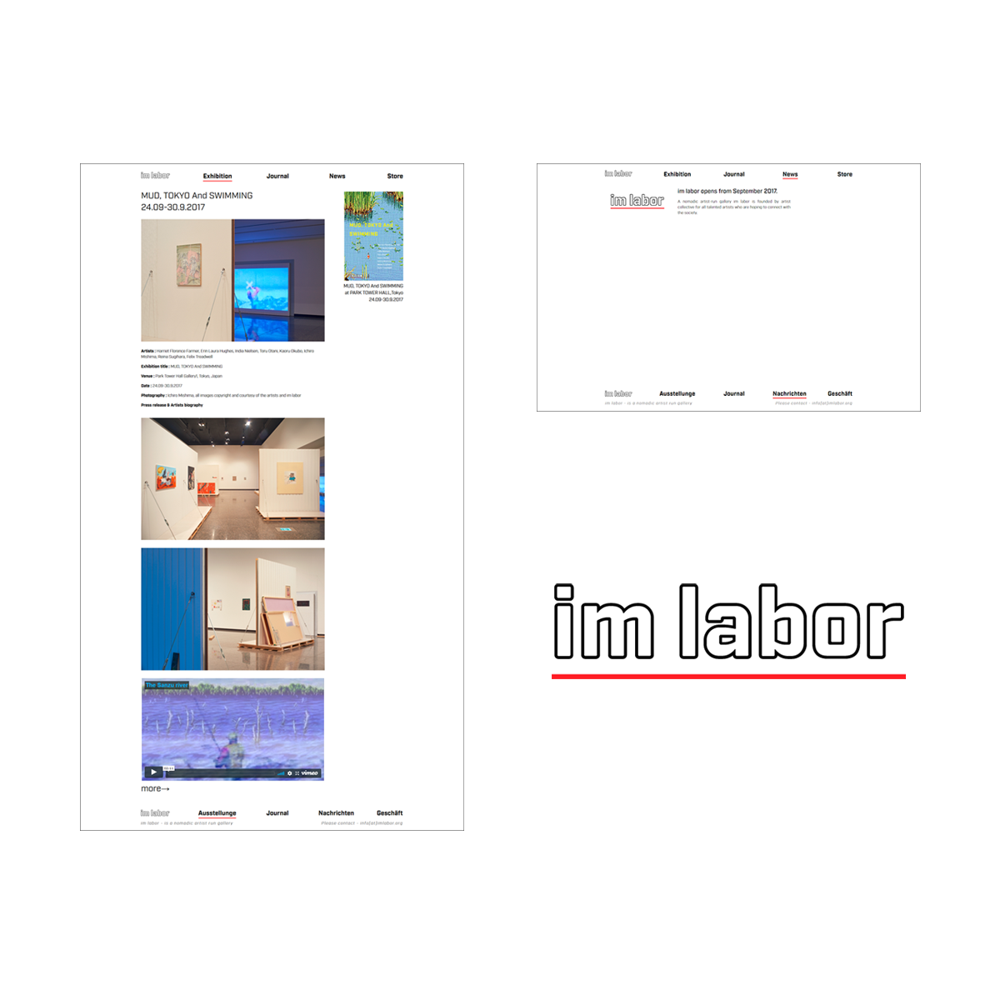

artist collective : im labor web site
- ・担当範囲
- ロゴデザイン / サイト設計・デザイン / マークアップ
- ・開発環境
- HTML：EJS / CSS：Sass / JS：jQuery / タスクランナー：gulp
http://imlabor.org
―
概要
クライアントはim labor という、友人の運営するアーティスト・コレクティブ。2017年9月に発足した組織で、発足にあたり組織のwebサイトを制作させていただいた。
日頃友人との間で、昨今のインターネットの発展とともに世界中のアーティストの作品がwebで閲覧できるという状況に魅力と可能性を感じ、展覧会のアーカイブを世界へ向けて公開、また定期的に更新することを目的とした。
サイトのメイン言語は英語だが、国内での認知も広げるため日英二ヶ国語によるサイトになっており、またその条件を利用しデザインを設計した。
ちなみに日本語が少しおかしいのは、英語をGoogle翻訳で変換するとたまに予想外なフレーズになることに面白みを感じ、あえてこのような表現とした。